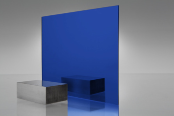

Data
Integratieniveau: Dankzij de vele vakken die we al hebben gehad in verband met het verwerken van data, heb ik dit aspect van de opleiding goed onder de knie.
Analyse
Doorgroeiniveau: Ondanks dat ik een analytische achtergrond heb, is mijn anlytisch vermogen iet of wat beperkt door het feit dat ik weinig praktische ervaring heb. Aangezien ik volgend jaar stage heb, zal dat waarschijnlijk goed evolueren.
Oplossend denken
Doorgroeiniveau: Omdat ik in het secundair onderwijs in een wiskundige richting zat met 6 uur wiskunde, heb ik die analytische achtergrond, waardoor ik een vrij sterk vermogen heb om oplossingen te bedenken. Echter is het soms moeilijk om die te implementeren, omdat ik in het tweede jaar van de opleiding zit. Ook dit zal met de stage van volgend jaar goed evolueren.
Beheer
Doorgroeiniveau: Als student toegepaste informatica en meer bepaald softwareontwikkeling, is het een doel om de projecten en applicaties zo te schrijven en te implementeren dat andere mensen die gemakkelijk en vlot kunnen hergebruiken en zelfs uitbreiden. We hebben hier omtrent al veel concepten gezien, zoals Objectgeoriënteerd programmeren en ontwerppatronen. Maar er is nog veel dat we volgend jaar moeten zien, waardoor ik van mezelf niet vind dat ik hier al heel ver in gevorderd ben.
Projectmatig werken
Doorgroeiniveau: Dankzij de verscheidene projectweken die er in de opleiding zijn, heb ik al enige ervaring met projectwerk. Ik zal altijd trachten de groep te versterken en het werk zo te verdelen dat de groep zo efficiënt mogelijk kan werken. Natuurlijk zijn projectweken niet hetzelfde als grote projecten in een bedrijf, waardoor ik ook op dit vlak nog heel erg veel kan bijleren.
Communicatie
Integratieniveau: Als lid van de Permanente Onderwijs Commissie is het nodig dat ik duidelijk en gestructureerd kan communiceren. Verder ging ik op internationale week, waar ik heb gemerkt dat ik ook in het Engels zeer vlot kan communiceren.
Zelfkritisch zijn
Doorgroeiniveau: Ik ben voor mezelf meestal redelijk kritisch. Ik kan het bijvoorbeeld moeilijk verdragen om een taak/project af te leveren, waarvan ik weet dat ik beter kon. Ik zal die evaluatie ook steeds voor mezelf maken. Anderzijds blijf ik ook zeer graag in mijn comfortzone, waardoor ik niet altijd creatief of vernieuwend ben.
Kwaliteitsvol handelen
Doorgroeiniveau: Ik denk dat deze competentie samenvattend is voor de andere. Ik denk dat ik op de goede weg ben om aan de competenties te voldoen als ik afstudeer. Ik denk dat ik me nu bevind tussen doorgroeiniveau en integratieniveau. Met de stage die er volgend jaar zit aan te komen, hoop en denk ik dat ik zeker nog zal evolueren en nog meer de competenties zal hebben die een afgestudeerde IT'er zou moeten hebben.